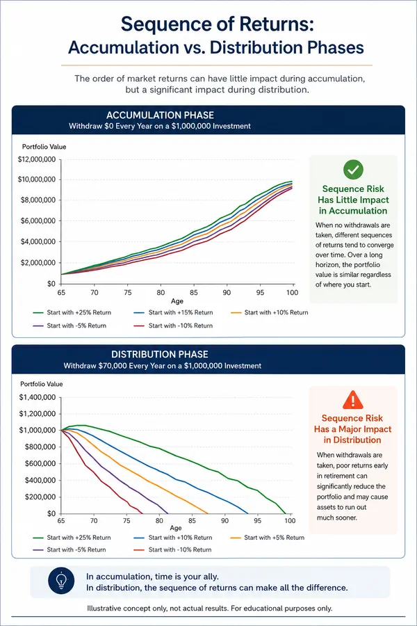

For most of my career, I was all in on accumulation.
More returns. Higher growth. Better performance. That was the game, and I played it aggressively. Thirty years in financial services, securities licenses, investment banks, broker dealers. I knew the market well and I trusted it.
Then I watched it take 25% of my retirement savings. Twice. The Dot Com collapse between 2000 and 2002. The Great Financial Crisis in 2007 and 2008. Two gut punches that forced me to rethink everything I thought I knew about preparing for retirement.
The Problem With the Way Most People Plan
During your working years, income is simple. You earn a paycheck. You spend it. You save what is left.
But retirement changes that completely. The paycheck stops, and now your income has to come from everything you have built. That is a fundamentally different challenge, and most retirement strategies are not designed for it.
The most common approach is portfolio withdrawals. You may have heard of the 4% rule, the idea that you can withdraw about 4% of your portfolio each year and not run out of money. On the surface that sounds reasonable.
Here is what gets overlooked: a significant portion of that 4% depends on market growth, not just income your investments generate. The average dividend yield of the S&P 500 has been approximately 1.84% over the last 25 years, meaning roughly half of that 4% withdrawal has to come from market appreciation rather than actual income. You are relying on markets to cooperate. And markets do not always cooperate, especially when you need them to.
Source: S&P Dow Jones Indices, multpl.com
Why Timing Matters More Than Most People Realize
When you begin withdrawing income from your portfolio, the timing of market returns becomes critical. If markets decline early in retirement while withdrawals are happening, it can create lasting damage that the portfolio may never fully recover from.
This is called sequence of returns risk. It is one of the most overlooked and least discussed risks in retirement planning. It is not just about how markets perform. It is about when they perform. For a deeper look at how this plays out with real numbers, see the sequence of returns illustration.

I lived this firsthand. I was not just reading about these market collapses in a research report. I was watching my own retirement savings shrink in real time while I was still trying to build them. Those experiences changed how I think about retirement income permanently.
A Different Approach
My philosophy is straightforward: take market timing out of the equation for the income you cannot afford to lose.
That means using a portion of your retirement savings to create a reliable income stream that covers your essential expenses every month, regardless of what markets do.
Not all of your assets. Just enough.
Essential expenses for most people include housing, healthcare, food, and transportation. You may define yours differently. That is fine. This is your plan, not a template.
What This Actually Changes
Once your essential expenses are covered by dependable income, something shifts. Your portfolio no longer has to carry the full burden of your lifestyle. It can stay invested. It can recover from downturns. It can be positioned for long term growth to help offset inflation over time.
And the income your portfolio generates can be used for the things that make retirement genuinely enjoyable. Travel. Home improvements. Family. Supporting the causes you care about.
When essential income is covered, financial stress decreases. Market volatility becomes tolerable rather than threatening. Spending feels more comfortable and intentional. Retirees with a reliable income floor consistently report feeling more confident spending because the income arrives on schedule rather than requiring them to draw down investments that fluctuate with every news cycle.
The Bottom Line
Cover what must be covered. Let the rest of your portfolio do what it does best, grow, adapt, and support your lifestyle.
That balance creates a retirement that feels stable, flexible, and enjoyable.
After all the years of saving and planning, that is exactly what you have earned.